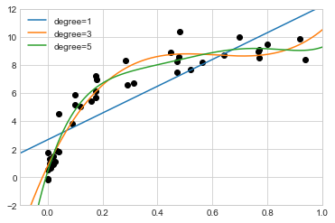
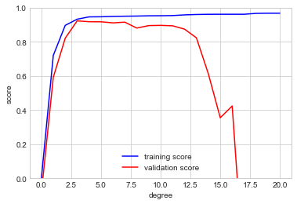
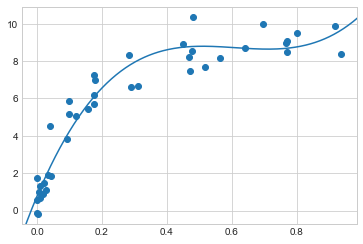
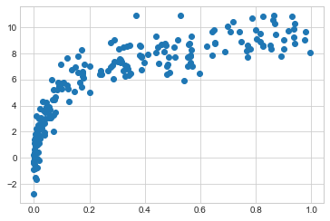
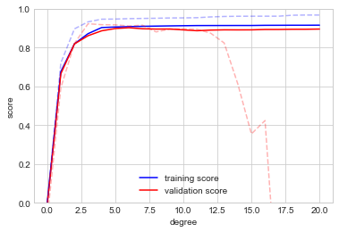
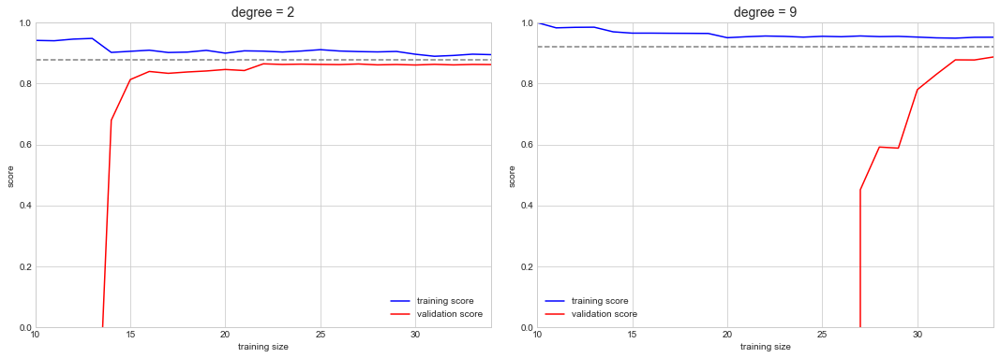
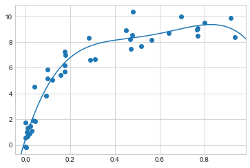

from sklearn.datasets import load_iris
iris = load_iris()
X = iris.data
y = iris.target하이퍼파라미터 및 모델 검증
이전 장에서 지도 머신러닝 모델을 적용하는 기본 방법을 살펴보았습니다.
- 모델 클래스를 선택합니다.
- 모델 하이퍼파라미터를 선택합니다.
- 모델을 훈련 데이터에 맞춥니다.
- 모델을 사용하여 새 데이터의 레이블을 예측합니다.
이 중 처음 두 부분인 모델 선택과 하이퍼파라미터 선택은 아마도 이러한 도구와 기술을 효과적으로 사용하는 데 가장 중요한 부분일 것입니다. 정보에 입각한 선택을 하려면 모델과 하이퍼파라미터가 데이터에 잘 맞는지 검증하는 방법이 필요합니다. 간단해 보일 수도 있지만 이를 효과적으로 수행하려면 피해야 할 몇 가지 함정이 있습니다.
모델 검증에 대한 생각
원칙적으로 모델 검증은 매우 간단합니다. 모델과 해당 하이퍼파라미터를 선택한 후 이를 일부 교육 데이터에 적용하고 예측을 알려진 값과 비교하여 모델이 얼마나 효과적인지 추정합니다.
이번 섹션에서는 먼저 모델 검증에 대한 순진한 접근 방식과 그 이유를 보여줍니다. 실패하면 홀드아웃 세트와 교차 검증을 사용하여 더욱 강력해지기 전에 모델 평가.
잘못된 방식의 모델 검증
이전 장에서 본 Iris 데이터 세트를 사용하여 검증에 대한 순진한 접근 방식부터 시작하겠습니다. 데이터를 로드하는 것부터 시작하겠습니다.
다음으로 모델과 하이퍼파라미터를 선택합니다. 여기서는 n_neighbors=1과 함께 k-최근접 이웃 분류기를 사용하겠습니다. 이것은 “알 수 없는 지점의 레이블이 가장 가까운 훈련 지점의 레이블과 동일합니다”라고 말하는 매우 간단하고 직관적인 모델입니다.
from sklearn.neighbors import KNeighborsClassifier
model = KNeighborsClassifier(n_neighbors=1)그런 다음 모델을 훈련하고 이를 사용하여 이미 레이블을 알고 있는 데이터의 레이블을 예측합니다.
model.fit(X, y)
y_model = model.predict(X)마지막으로 올바르게 레이블이 지정된 점의 비율을 계산합니다.
from sklearn.metrics import accuracy_score
accuracy_score(y, y_model)1.0정확도 점수는 1.0으로, 이는 모델이 100% 포인트에 올바르게 레이블을 지정했음을 나타냅니다. 그러나 이것이 실제로 예상되는 정확도를 측정하는 것입니까? 우리는 실제로 100% 정확할 것으로 기대하는 모델을 발견했습니까?
여러분이 모은 것처럼 대답은 ’아니요’입니다. 실제로 이 접근 방식에는 근본적인 결함이 있습니다. 동일한 데이터에 대해 모델을 훈련하고 평가합니다. 게다가 이 최근접 이웃 모델은 단순히 훈련 데이터를 저장하고 새로운 데이터를 저장된 포인트와 비교하여 레이블을 예측하는 인스턴스 기반 추정기입니다. 인위적인 경우를 제외하고 매번 100% 정확도를 얻습니다!
올바른 방법으로 모델 검증: 홀드아웃 세트
그렇다면 무엇을 할 수 있습니까? 모델 성능에 대한 더 나은 이해는 홀드아웃 세트를 사용하여 찾을 수 있습니다. 즉, 모델 교육에서 데이터의 일부 하위 집합을 보관한 다음 이 홀드아웃 세트를 사용하여 모델 성능을 확인합니다. 이 분할은 Scikit-Learn의 train_test_split 유틸리티를 사용하여 수행합니다.
from sklearn.model_selection import train_test_split
# split the data with 50% in each set
X1, X2, y1, y2 = train_test_split(X, y, random_state=0,
train_size=0.5)
# fit the model on one set of data
model.fit(X1, y1)
# evaluate the model on the second set of data
y2_model = model.predict(X2)
accuracy_score(y2, y2_model)0.9066666666666666여기서는 보다 합리적인 결과를 살펴볼 수 있습니다. 즉, 가장 가까운 이웃 분류기는 이 홀드아웃 세트에서 약 90% 정확합니다. 홀드아웃 세트는 모델이 이전에 “본” 적이 없기 때문에 알 수 없는 데이터와 유사합니다.
교차 검증을 통한 모델 검증
모델 검증을 위해 홀드아웃 세트를 사용할 때의 한 가지 단점은 모델 교육으로 인해 데이터의 일부가 손실된다는 것입니다. 이전 사례에서는 데이터 세트의 절반이 모델 교육에 기여하지 않습니다! 특히 초기 훈련 데이터 세트가 작은 경우 이는 최적이 아닙니다.
이 문제를 해결하는 한 가지 방법은 교차 검증을 사용하는 것입니다. 즉, 데이터의 각 하위 집합이 훈련 세트와 검증 세트 모두로 사용되는 일련의 적합성을 수행하는 것입니다. 시각적으로 다음 그림과 유사합니다.

여기서는 데이터의 각 절반을 홀드아웃 세트로 번갈아 사용하여 두 번의 검증 시도를 수행합니다. 이전의 분할 데이터를 사용하여 다음과 같이 구현합니다.
y2_model = model.fit(X1, y1).predict(X2)
y1_model = model.fit(X2, y2).predict(X1)
accuracy_score(y1, y1_model), accuracy_score(y2, y2_model)(0.96, 0.9066666666666666)두 가지 정확도 점수가 나오는데, 이를 결합하여(예: 평균을 취하여) 글로벌 모델 성능을 더 잘 측정합니다. 이 특정 형태의 교차 검증은 2겹 교차 검증입니다. 즉, 데이터를 두 세트로 분할하고 각각을 검증 세트로 사용하는 것입니다.
이 아이디어를 확장하여 더 많은 시행과 데이터 접기를 더 많이 사용합니다. 예를 들어 다음 그림은 5겹 교차 검증을 시각적으로 보여줍니다.

여기서는 데이터를 5개 그룹으로 나누고 각 그룹을 차례로 사용하여 데이터의 나머지 4/5에 대한 모델 적합성을 평가합니다. 이 작업을 직접 수행하는 것은 다소 지루하지만 Scikit-Learn의 cross_val_score 편의 루틴을 사용하여 간결하게 수행합니다.
from sklearn.model_selection import cross_val_score
cross_val_score(model, X, y, cv=5)array([0.96666667, 0.96666667, 0.93333333, 0.93333333, 1. ])데이터의 다양한 하위 집합에 대해 검증을 반복하면 알고리즘 성능에 대한 더 나은 아이디어를 얻을 수 있습니다.
Scikit-Learn은 특정 상황에 유용한 여러 교차 검증 체계를 구현합니다. 이는 ‘model_selection’ 모듈의 반복자를 통해 구현됩니다. 예를 들어 접기 수가 데이터 포인트 수와 동일한 극단적인 경우로 가고 싶을 수도 있습니다. 즉, 각 시행에서 하나를 제외한 모든 포인트에 대해 훈련합니다. 이러한 유형의 교차 검증을 leave-one-out 교차 검증이라고 하며 다음과 같이 사용합니다.
from sklearn.model_selection import LeaveOneOut
scores = cross_val_score(model, X, y, cv=LeaveOneOut())
scoresarray([1., 1., 1., 1., 1., 1., 1., 1., 1., 1., 1., 1., 1., 1., 1., 1., 1.,
1., 1., 1., 1., 1., 1., 1., 1., 1., 1., 1., 1., 1., 1., 1., 1., 1.,
1., 1., 1., 1., 1., 1., 1., 1., 1., 1., 1., 1., 1., 1., 1., 1., 1.,
1., 1., 1., 1., 1., 1., 1., 1., 1., 1., 1., 1., 1., 1., 1., 1., 1.,
1., 1., 0., 1., 0., 1., 1., 1., 1., 1., 1., 1., 1., 1., 1., 0., 1.,
1., 1., 1., 1., 1., 1., 1., 1., 1., 1., 1., 1., 1., 1., 1., 1., 1.,
1., 1., 1., 1., 0., 1., 1., 1., 1., 1., 1., 1., 1., 1., 1., 1., 1.,
0., 1., 1., 1., 1., 1., 1., 1., 1., 1., 1., 1., 1., 1., 0., 1., 1.,
1., 1., 1., 1., 1., 1., 1., 1., 1., 1., 1., 1., 1., 1.])150개의 샘플이 있기 때문에 일대일 교차 검증은 150번의 시도에 대한 점수를 산출하고 각 점수는 성공(1.0) 또는 실패(0.0) 예측을 나타냅니다. 이들의 평균을 취하면 오류율을 추정합니다.
scores.mean()0.96다른 교차 검증 방식도 비슷하게 사용합니다. Scikit-Learn에서 사용할 수 있는 기능에 대한 설명을 보려면 IPython을 사용하여 sklearn.model_selection 하위 모듈을 탐색하거나 Scikit-Learn의 교차 검증 문서를 살펴보세요.
최적의 모델 선정
이제 검증 및 교차 검증의 기본 사항을 살펴보았으므로 모델 선택 및 하이퍼파라미터 선택에 대해 좀 더 자세히 살펴보겠습니다. 이러한 문제는 머신러닝(Machine Learning) 실행의 가장 중요한 측면 중 일부이지만, 머신러닝(Machine Learning) 입문 튜토리얼에서는 이 정보가 종종 간과되는 것을 발견했습니다.
핵심적으로 중요한 질문은 다음과 같습니다. 추정자의 성과가 저조한 경우 어떻게 앞으로 나아가야 합니까? 몇 가지 가능한 답변이 있습니다.
- 더 복잡하고 유연한 모델을 사용하세요.
- 덜 복잡하고 덜 유연한 모델을 사용하십시오.
- 더 많은 훈련 샘플을 수집하세요.
- 더 많은 데이터를 수집하여 각 샘플에 기능을 추가합니다.
이 질문에 대한 대답은 종종 직관에 어긋납니다. 특히, 때로는 더 복잡한 모델을 사용하면 결과가 더 나빠질 수도 있고, 더 많은 훈련 샘플을 추가해도 결과가 향상되지 않을 수도 있습니다. 모델을 개선할 단계를 결정하는 능력이 성공적인 머신러닝(Machine Learning) 실무자와 실패자를 구분하는 기준입니다.
편향-분산 절충
’최고의 모델’을 찾는 것은 편향과 분산 사이의 절충점에서 최적의 지점을 찾는 것입니다. 동일한 데이터 세트에 대한 두 가지 회귀 적합치를 나타내는 다음 그림을 고려하십시오.

이들 모델 중 어느 것도 데이터에 특별히 적합하지는 않지만 서로 다른 방식으로 실패한다는 것은 분명합니다.
왼쪽 모델은 데이터를 통해 직선 적합을 찾으려고 시도합니다. 이 경우 직선은 데이터를 정확하게 분할할 수 없기 때문에 직선 모델은 이 데이터 세트를 제대로 설명할 수 없습니다. 이러한 모델은 데이터를 과소적합한다고 합니다. 즉, 데이터의 모든 특징을 적절하게 설명할 만큼 유연성이 충분하지 않습니다. 이를 다르게 표현하면 모델의 편향이 높다는 것입니다.
오른쪽 모델은 데이터를 통해 고차 다항식을 맞추려고 시도합니다. 여기서 모델 적합은 데이터의 미세한 특징을 거의 완벽하게 설명할 수 있는 충분한 유연성을 가지고 있지만 훈련 데이터를 매우 정확하게 설명하더라도 정확한 형태는 해당 데이터를 생성한 모든 프로세스의 본질적인 속성보다는 데이터의 특정 노이즈 속성을 더 잘 반영하는 것으로 보입니다. 이러한 모델은 데이터에 과적합되었다고 합니다. 즉, 유연성이 너무 커서 모델이 기본 데이터 분포뿐만 아니라 무작위 오류도 고려하게 됩니다. 이를 다르게 표현하면 모델의 분산이 높다는 것입니다.
이를 다른 관점에서 살펴보려면 이 두 모델을 사용하여 일부 새로운 데이터의 y 값을 예측하면 어떤 일이 발생하는지 생각해 보세요. 다음 그림의 플롯에서 빨간색/밝은 점은 훈련 세트에서 생략된 데이터를 나타냅니다.

여기서 점수는 \(R^2\) 점수 또는 결정 계수로, 목표 값의 단순 평균을 기준으로 모델의 성능을 측정합니다. \(R^2=1\)은 완벽한 일치를 나타내고, \(R^2=0\)은 모델이 단순히 데이터의 평균을 취하는 것보다 나을 것이 없음을 나타내며, 음수 값은 더 나쁜 모델을 의미합니다. 이 두 모델과 관련된 점수로부터 우리는 보다 일반적으로 유지되는 관찰을 합니다.
- 높은 편향 모델의 경우 검증 세트의 모델 성능은 훈련 세트의 성능과 유사합니다.
- 고분산 모델의 경우 검증 세트의 모델 성능은 훈련 세트의 성능보다 훨씬 나쁩니다.
모델 복잡성을 조정할 수 있는 능력이 있다고 가정하면 훈련 점수와 검증 점수가 다음 그림과 같이 동작할 것으로 예상합니다.

여기에 표시된 다이어그램은 종종 검증 곡선이라고 불리며 다음과 같은 특징을 살펴볼 수 있습니다.
- 트레이닝 점수는 어디에서나 검증 점수보다 높습니다. 이는 일반적으로 사실입니다. 모델은 본 적이 없는 데이터보다 본 데이터에 더 적합합니다.
- 매우 낮은 모델 복잡성(높은 편향 모델)의 경우 훈련 데이터가 과소적합됩니다. 이는 모델이 훈련 데이터와 이전에 볼 수 없었던 데이터 모두에 대한 예측력이 좋지 않음을 의미합니다.
- 매우 높은 모델 복잡성(고분산 모델)의 경우 훈련 데이터가 과적합됩니다. 즉, 모델이 훈련 데이터를 매우 잘 예측하지만 이전에 볼 수 없었던 데이터에 대해서는 실패함을 의미합니다.
- 일부 중간 값의 경우 검증 곡선에 최대값이 있습니다. 이러한 복잡성 수준은 편향과 분산 간의 적절한 균형을 나타냅니다.
모델 복잡성을 조정하는 방법은 모델마다 다릅니다. 이후 장에서 개별 모델을 심층적으로 논의할 때 각 모델이 이러한 조정을 어떻게 허용하는지 살펴보겠습니다.
Scikit-Learn의 검증 곡선
모델 클래스에 대한 검증 곡선을 계산하기 위해 교차 검증을 사용하는 예를 살펴보겠습니다. 여기서는 다항식 회귀 모델을 사용합니다. 이는 다항식의 차수가 조정 가능한 매개변수인 일반화된 선형 모델입니다. 예를 들어 1차 다항식은 데이터에 직선을 맞춥니다. 모델 매개변수 \(a\) 및 \(b\)의 경우:
\[ y = 도끼 + b \]
3차 다항식은 3차 곡선을 데이터에 맞춥니다. 모델 매개변수 \(a, b, c, d\)의 경우:
\[ y = 도끼^3 + bx^2 + cx + d \]
우리는 이를 다양한 다항식 특징으로 일반화합니다. Scikit-Learn에서는 다항식 전처리기와 결합된 선형 회귀 분류기를 사용하여 이를 구현합니다. 파이프라인을 사용하여 이러한 작업을 함께 연결합니다(기능 엔지니어링에서 다항식 기능과 파이프라인에 대해 더 자세히 설명합니다).
from sklearn.preprocessing import PolynomialFeatures
from sklearn.linear_model import LinearRegression
from sklearn.pipeline import make_pipeline
def PolynomialRegression(degree=2, **kwargs):
return make_pipeline(PolynomialFeatures(degree),
LinearRegression(**kwargs))이제 모델에 적합한 데이터를 만들어 보겠습니다.
import numpy as np
def make_data(N, err=1.0, rseed=1):
# randomly sample the data
rng = np.random.RandomState(rseed)
X = rng.rand(N, 1) ** 2
y = 10 - 1. / (X.ravel() + 0.1)
if err > 0:
y += err * rng.randn(N)
return X, y
X, y = make_data(40)이제 여러 각도의 다항식 피팅과 함께 데이터를 시각화합니다(다음 그림 참조).
%matplotlib inline
import matplotlib.pyplot as plt
plt.style.use('seaborn-whitegrid')
X_test = np.linspace(-0.1, 1.1, 500)[:, None]
plt.scatter(X.ravel(), y, color='black')
axis = plt.axis()
for degree in [1, 3, 5]:
y_test = PolynomialRegression(degree).fit(X, y).predict(X_test)
plt.plot(X_test.ravel(), y_test, label='degree={0}'.format(degree))
plt.xlim(-0.1, 1.0)
plt.ylim(-2, 12)
plt.legend(loc='best');
이 경우 모델 복잡성을 제어하는 손잡이는 음이 아닌 정수일 수 있는 다항식의 정도입니다. 대답할 수 있는 유용한 질문은 다음과 같습니다. 편향(과소적합)과 분산(과적합) 사이에 적절한 균형을 제공하는 다항식의 정도는 무엇입니까?
우리는 이 특정 데이터와 모델에 대한 검증 곡선을 시각화함으로써 이를 진전시킬 수 있습니다. 이는 Scikit-Learn에서 제공하는 validation_curve 편의 루틴을 사용하여 간단하게 수행합니다. 탐색할 모델, 데이터, 매개변수 이름 및 범위가 주어지면 이 함수는 범위 전체에서 훈련 점수와 검증 점수를 모두 자동으로 계산합니다(다음 그림 참조).
from sklearn.model_selection import validation_curve
degree = np.arange(0, 21)
train_score, val_score = validation_curve(
PolynomialRegression(), X, y,
param_name='polynomialfeatures__degree',
param_range=degree, cv=7)
plt.plot(degree, np.median(train_score, 1),
color='blue', label='training score')
plt.plot(degree, np.median(val_score, 1),
color='red', label='validation score')
plt.legend(loc='best')
plt.ylim(0, 1)
plt.xlabel('degree')
plt.ylabel('score');
이는 우리가 기대하는 질적 행동을 정확하게 보여줍니다. 훈련 점수는 어디에서나 검증 점수보다 높고, 훈련 점수는 모델 복잡성이 증가함에 따라 단조롭게 향상되며, 검증 점수는 모델이 과적합됨에 따라 떨어지기 전에 최대값에 도달합니다.
검증 곡선을 통해 3차 다항식에 대해 편향과 분산 간의 최적의 균형이 발견되었음을 확인합니다. 다음과 같이 원래 데이터에 대해 이 피팅을 계산하고 표시합니다(다음 그림 참조).
plt.scatter(X.ravel(), y)
lim = plt.axis()
y_test = PolynomialRegression(3).fit(X, y).predict(X_test)
plt.plot(X_test.ravel(), y_test);
plt.axis(lim);
이 최적 모델을 찾는 데 실제로 훈련 점수를 계산할 필요는 없지만 훈련 점수와 검증 점수 간의 관계를 조사하면 모델 성능에 대한 유용한 통찰력을 얻을 수 있습니다.
학습 곡선
모델 복잡성의 한 가지 중요한 측면은 최적의 모델이 일반적으로 훈련 데이터의 크기에 따라 달라진다는 것입니다. 예를 들어 포인트 수가 5배 많은 새 데이터 세트를 생성해 보겠습니다(다음 그림 참조).
X2, y2 = make_data(200)
plt.scatter(X2.ravel(), y2);
이제 앞의 코드를 복제하여 이 더 큰 데이터 세트에 대한 검증 곡선을 그려보겠습니다. 참고로 이전 결과도 겹쳐서 표시하겠습니다(다음 그림 참조).
degree = np.arange(21)
train_score2, val_score2 = validation_curve(
PolynomialRegression(), X2, y2,
param_name='polynomialfeatures__degree',
param_range=degree, cv=7)
plt.plot(degree, np.median(train_score2, 1),
color='blue', label='training score')
plt.plot(degree, np.median(val_score2, 1),
color='red', label='validation score')
plt.plot(degree, np.median(train_score, 1),
color='blue', alpha=0.3, linestyle='dashed')
plt.plot(degree, np.median(val_score, 1),
color='red', alpha=0.3, linestyle='dashed')
plt.legend(loc='lower center')
plt.ylim(0, 1)
plt.xlabel('degree')
plt.ylabel('score');
실선은 새로운 결과를 나타내고, 희미한 점선은 이전의 더 작은 데이터 세트의 결과를 나타냅니다. 검증 곡선을 보면 더 큰 데이터 세트가 훨씬 더 복잡한 모델을 지원할 수 있다는 것이 분명합니다. 여기에서 최고점은 아마도 약 6도일 것입니다. 그러나 20차 모델이라도 데이터에 심각하게 과적합되지는 않습니다. 검증 및 훈련 점수는 매우 유사하게 유지됩니다.
따라서 검증 곡선의 동작에는 모델 복잡성과 훈련 포인트 수라는 두 가지 중요한 입력이 있습니다. 모델에 맞게 점점 더 큰 데이터 하위 집합을 사용하여 훈련 포인트 수의 함수로 모델의 동작을 탐색함으로써 더 많은 통찰력을 얻을 수 있습니다. 훈련 세트의 크기에 따른 훈련/검증 점수의 도표를 학습 곡선이라고도 합니다.
학습 곡선에서 기대할 수 있는 일반적인 동작은 다음과 같습니다.
- 주어진 복잡성의 모델은 작은 데이터 세트에 과적합됩니다. 즉, 훈련 점수는 상대적으로 높지만 검증 점수는 상대적으로 낮습니다.
- 주어진 복잡성의 모델은 대규모 데이터 세트에 과소적합됩니다. 즉, 훈련 점수는 감소하지만 검증 점수는 증가합니다.
- 모델은 우연을 제외하고 훈련 세트보다 검증 세트에 더 나은 점수를 제공하지 않습니다. 즉, 곡선이 계속 서로 가까워져야 하지만 교차해서는 안 됩니다.
이러한 기능을 염두에 두고 학습 곡선이 질적으로 다음 그림에 표시된 것과 같을 것으로 예상합니다.

학습 곡선의 주목할만한 특징은 훈련 샘플 수가 증가함에 따라 특정 점수로 수렴된다는 것입니다. 특히, 특정 모델이 수렴할 만큼 충분한 포인트가 있으면 훈련 데이터를 더 추가해도 도움이 되지 않습니다! 이 경우 모델 성능을 높이는 유일한 방법은 다른(종종 더 복잡한) 모델을 사용하는 것입니다.
Scikit-Learn의 학습 곡선
Scikit-Learn은 모델에서 이러한 학습 곡선을 계산하기 위한 편리한 유틸리티를 제공합니다. 여기서는 2차 다항식 모델과 9차 다항식을 사용하여 원본 데이터 세트에 대한 학습 곡선을 계산합니다(다음 그림 참조).
from sklearn.model_selection import learning_curve
fig, ax = plt.subplots(1, 2, figsize=(16, 6))
fig.subplots_adjust(left=0.0625, right=0.95, wspace=0.1)
for i, degree in enumerate([2, 9]):
N, train_lc, val_lc = learning_curve(
PolynomialRegression(degree), X, y, cv=7,
train_sizes=np.linspace(0.3, 1, 25))
ax[i].plot(N, np.mean(train_lc, 1),
color='blue', label='training score')
ax[i].plot(N, np.mean(val_lc, 1),
color='red', label='validation score')
ax[i].hlines(np.mean([train_lc[-1], val_lc[-1]]), N[0],
N[-1], color='gray', linestyle='dashed')
ax[i].set_ylim(0, 1)
ax[i].set_xlim(N[0], N[-1])
ax[i].set_xlabel('training size')
ax[i].set_ylabel('score')
ax[i].set_title('degree = {0}'.format(degree), size=14)
ax[i].legend(loc='best')
이는 모델이 증가하는 훈련 데이터 양에 어떻게 반응하는지 시각적으로 보여주기 때문에 귀중한 진단입니다. 특히, 학습 곡선이 이미 수렴한 경우(즉, 훈련 곡선과 검증 곡선이 이미 서로 가까울 때) 훈련 데이터를 더 추가해도 적합성이 크게 향상되지 않습니다! 이 상황은 2차 모델에 대한 학습 곡선과 함께 왼쪽 패널에 표시됩니다.
수렴 점수를 높이는 유일한 방법은 다른(보통 더 복잡한) 모델을 사용하는 것입니다. 오른쪽 패널에서 이를 확인합니다. 훨씬 더 복잡한 모델로 이동하면 수렴 점수(점선으로 표시)는 높아지지만 모델 분산(훈련 점수와 검증 점수의 차이로 표시)은 더 높아집니다. 더 많은 데이터 포인트를 추가하면 더 복잡한 모델에 대한 학습 곡선이 결국 수렴하게 됩니다.
특정 모델 및 데이터 세트 선택에 대한 학습 곡선을 그리면 분석 개선을 위한 앞으로 나아갈 방법에 대한 결정을 내리는 데 도움이 될 수 있습니다.
실제 검증: 그리드 검색
앞의 논의는 편향과 분산 사이의 균형과 모델 복잡성 및 훈련 세트 크기에 대한 의존성에 대한 직관을 제공하기 위한 것입니다. 실제로 모델에는 일반적으로 돌릴 수 있는 손잡이가 두 개 이상 있습니다. 즉, 검증 및 학습 곡선의 플롯이 선에서 다차원 표면으로 변경됩니다. 이러한 경우 그러한 시각화는 어려우며 검증 점수를 최대화하는 특정 모델을 찾는 것이 좋습니다.
Scikit-Learn은 이러한 종류의 검색을 보다 편리하게 만드는 몇 가지 도구를 제공합니다. 여기서는 최적의 다항식 모델을 찾기 위해 그리드 검색을 사용하는 방법을 고려해 보겠습니다. 우리는 모델 특징의 2차원 그리드, 즉 다항식 차수와 절편에 맞는지 여부를 알려주는 플래그를 탐색할 것입니다. 이는 Scikit-Learn의 GridSearchCV 메타 추정기를 사용하여 설정합니다.
from sklearn.model_selection import GridSearchCV
param_grid = {'polynomialfeatures__degree': np.arange(21),
'linearregression__fit_intercept': [True, False]}
grid = GridSearchCV(PolynomialRegression(), param_grid, cv=7)일반 추정기와 마찬가지로 이는 아직 어떤 데이터에도 적용되지 않았습니다. fit 메서드를 호출하면 각 그리드 지점에 모델이 맞춰지고 그 과정에서 점수를 추적합니다.
grid.fit(X, y);이제 모델이 적합해졌으므로 다음과 같이 최상의 매개변수를 요청합니다.
grid.best_params_{'linearregression__fit_intercept': False, 'polynomialfeatures__degree': 4}마지막으로 원하는 경우 최상의 모델을 사용하고 이전의 코드를 사용하여 데이터에 대한 적합성을 표시합니다(다음 그림 참조).
model = grid.best_estimator_
plt.scatter(X.ravel(), y)
lim = plt.axis()
y_test = model.fit(X, y).predict(X_test)
plt.plot(X_test.ravel(), y_test);
plt.axis(lim);
’GridSearchCV’의 다른 옵션에는 사용자 정의 채점 기능 지정, 계산 병렬화, 무작위 검색 수행 등의 기능이 포함됩니다. 자세한 내용은 심층: 커널 밀도 추정 및 기능 엔지니어링: 이미지 작업의 예를 참조하거나 Scikit-Learn의 [그리드 검색]을 참조하세요. 문서](http://Scikit-Learn.org/stable/modules/grid_search.html).
요약
이 장에서 우리는 편향-분산 균형의 직관적인 측면과 모델을 데이터에 맞출 때 이것이 어떻게 작용하는지에 초점을 맞춰 모델 검증 및 하이퍼파라미터 최적화의 개념을 탐구하기 시작했습니다. 특히 더 복잡하고 유연한 모델에 대한 과적합을 방지하기 위해 매개변수를 조정할 때 검증 세트 또는 교차 검증 접근 방식을 사용하는 것이 중요하다는 사실을 발견했습니다.
이후 장에서는 특히 유용한 모델의 세부 사항, 이러한 모델에 사용할 수 있는 조정 방법, 이러한 자유 매개변수가 모델 복잡성에 미치는 영향에 대해 논의할 것입니다. 이러한 머신러닝(Machine Learning) 접근 방식을 읽고 배우면서 이 장의 교훈을 염두에 두십시오!